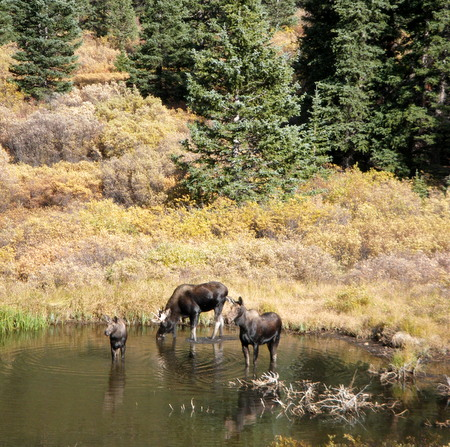

Jacob was 2-0. He's picked up some new moves and counters...pinned his opponents in the first period in both matches. No more matches until after the holidays, then regionals and states.
Jacob was 2-0 on Saturday. Beth and Jacob met up with Abi and Zuru at Eldora for some snowboarding. I've been enjoying the belated Summer weather. The mtn biking around home is fantastic right now.
May 6, 1918 - November 15, 2012
Angeline "Nonnie" Pulli of Willow Grove, Pennsylvania passed away peacefully at home surrounded by her family on Thursday,
November 15, 2012. She was 94 years old.
Angeline was born May 6, 1918 in Jenkintown, Pennsylvania, daughter of the late Nicola Pileggi and the late
Antoinetta Pileggi (nee - Jampo).
She is the beloved wife of 75 years of Paul Pulli, mother of Michael P. Pulli and his wife Sandra B., Paulette Farling and her
husband Robert, and Mary Lou Corbett and her husband David; grandmother of eight; great grandmother of thirteen; sister of
Pauline Pileggi, Cass Campbell, Anthony Pileggi, and Nicholas Pileggi.
Angelilne was a lifelong resident of Willow Grove. She met Paul Pulli while he was visiting her neighbor, his aunt, in 1935.
The two fell in love and were married on November 27, 1937 at St. David Church in Willow Grove. They made their home in Willow Grove
where they started to raise their family. In 1960, Paul built their second family home where they continued to live to this day.
Angeline loved to knit and crochet, she will be missed for her meatballs and love she shared with her family and friends.
Relatives and friends are invited to her visitation on Monday, November 19, 2012 from 10:00 A.M. and funeral service at 11:30 A.M.
at Wetzel and Son Funeral Home, 501 Easton Road, Willow Grove, PA 19090. Her graveside service will follow at Holy Sepulchre
Cemetery, 3301 West Cheltenham Avenue, Cheltenham, PA 19038.Religious services will be conducted by Rev. Francis Pileggi OSFS.
Final game of the playoffs for the Bobcats coming up!
Win on Saturday and they play for the championship.
9/21/201
Beth and I got a little taste of Fall in the high country.
CO River Cutthroat, and the end of summer.

9/11/201
Some Labor Day weekend pics:
8/16/2012
It's the 1st day of school for Jacob and Beth today...
First bus ride for Jake!
First BBQ at the new house
7/19/2012
Wow...the last couple weeks have been a blur.
Our house is sold- money is in the bank, and we are Homeess until we close on our new house at the end of the month.
Yeeehaaa!
Beth and Jacob are in NH having fun with family.
I'm living in the camper on the banks of the S. Fork of the Snake River in ID.
Oh yes!
Been waiting for this, and it feels good.
S. Fork
Had an awesome visit w Andy Weiser and his wife Carmin. Can't wait to see them again in Thailand and/or Paraguay!
7/2/2012
Looks like everything is a go for the sale of our current home and the aquisition of the new place.
We're getting out of town and hanging around Cody, WY and East Yellowstone.
Floating the N. Fork of the Shoshone...water is just starting to drop.
6/13/2012
Getting the summer started on the Arkansas and Gunnison Rivers.
5/29/2012
Enjoying a fun visit to PA.
5/21/2012
Matt and I spent a couple days in the Flat-Tops... last stronghold for the CO River Cutthroat Trout.
Trappers Lake
Awakened to 3" of new snow, and snow all day.
4/28/2012
No big news to report. I suppose that's a good thing, although I'm looking forward to the day
I say "the Lafayette house is sold".
It's looking like a draught year for us, as we seem to have stepped right into summer weather.
Hard not to foresee a beer in those hands...
"Hold my beer a sec - watch this!"
Just below Zume Flume @ 2oo cfs...as low as it gets
The Easter Bunny has a lot in common w Santa
Good times on the home front
4/3/2012
First float trip of the year.
Floated a stretch of Upper North Platte w Ken Fisher this past weekend.
The snow is melting fast, and it looks like we will step right into Spring/Summer with a minimal runoff.
3/26/2012
Spring Break has arrived.
We are all enjoying "Spring Break". School's out for a week, and Beth and Jacob are most certainly enjoying that.
Bill and Barbara are in town for the festivities as well.
Spring Break w Bill and Barbara
3/20/2012
Today is Beth's birtday- despite her attempts to ignore the fact
Happy mid-life crisis...I mean Birthday!
Happy Birthday Beth!
Baby Beth
3/19/2012
Springtime at last...Beth's birthday is tomorrow, March 20 (first day of Spring).
No big birthday plans in store, as she and Jacob start Spring Break on Friday and relatives will soon be arriving (Barbara and Bill).
3/5/2012
Last trip to the penalty box for Jacob.
3/4/2012
Beth and I got a little nordic skiing in on Friday while Jacob was at school.
Conditions are excellent.
2/27/2012
Last week of hockey for Jacob...it's been a fun season!
Boulder Bison 2012 Squirt B
3rd Grade Portrait
1/4/2012
Happy New Year!
We kicked off 2012 in Central WY with a couple days of nordic skiing on Casper Mtn, and then we
headed to the Miracle Mile on the N.Platte river.
Got some skiing in at home...we got about a foot and a half before Christmas.
Christmas 2011
Rigging up on New Years Eve
River crossing
Casper Mtn Trail Center